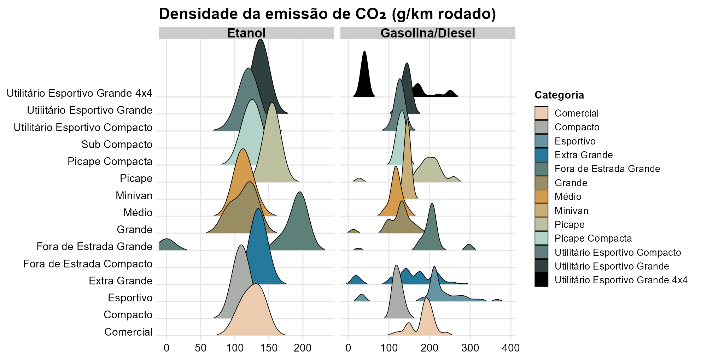
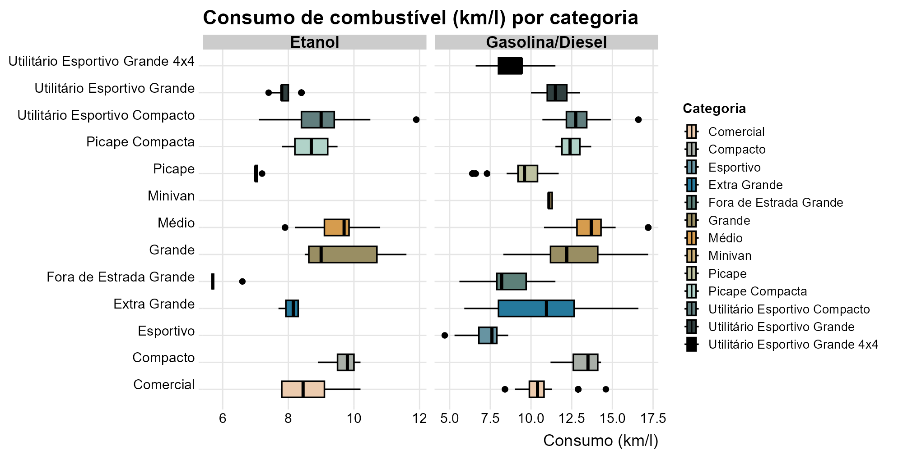
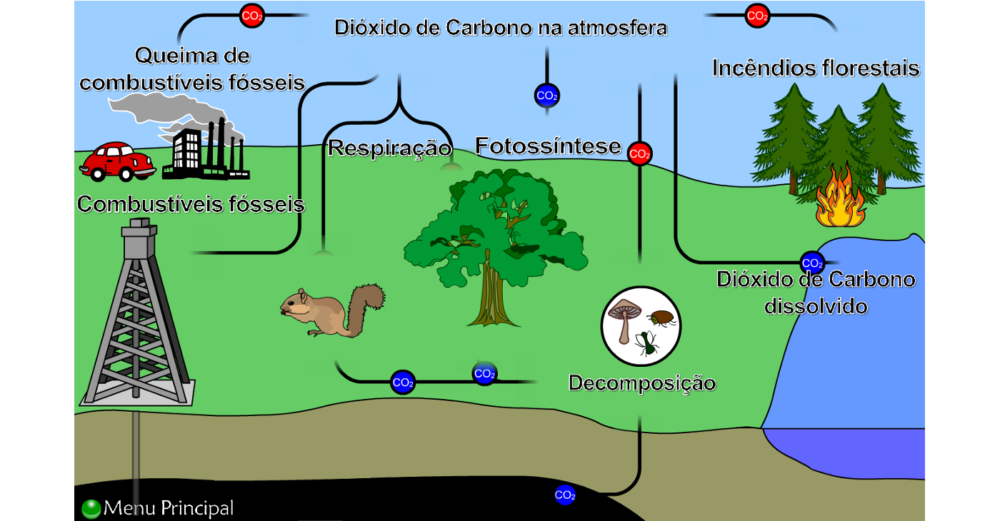

| Emissão média de CO₂ por categoria veicular | |||||
| Médias estimadas em kg de CO₂ por ano (13.000 km rodados) | |||||
| Categoria |
Etanol
|
Gasolina/Diesel
|
CO₂ evitado com etanol (kg/ano) | ||
|---|---|---|---|---|---|
| Total (kg/ano) | Fóssil (kg/ano) | Total (kg/ano) | Fóssil (kg/ano) | ||
| Comercial | 1.633,7 | 0,0 | 2.404,0 | 1.410,5 | 770,3 |
| Compacto | 1.430,0 | 0,0 | 1.584,6 | 1.303,4 | 154,6 |
| Esportivo | - | - | 2.731,6 | 2.248,4 | - |
| Extra Grande | 1.751,8 | 0,0 | 1.939,1 | 1.597,1 | 187,4 |
| Fora de Estrada Compacto | 2.106,0 | 0,0 | 2.236,0 | 1.846,0 | 130,0 |
| Fora de Estrada Grande | 2.128,3 | 0,0 | 2.657,3 | 2.217,3 | 529,0 |
| Grande | 1.465,3 | 0,0 | 1.668,1 | 1.372,6 | 202,8 |
| Médio | 1.473,3 | 0,0 | 1.540,5 | 1.267,7 | 67,2 |
| Minivan | 1.781,0 | 0,0 | 1.892,8 | 1.554,8 | 111,8 |
| Picape | 2.011,8 | 0,0 | 2.528,9 | 1.887,0 | 517,2 |
| Picape Compacta | 1.626,4 | 0,0 | 1.695,1 | 1.392,4 | 68,6 |
| Sub Compacto | 1.326,0 | 0,0 | 1.404,0 | 1.157,0 | 78,0 |
| Utilitário Esportivo Compacto | 1.556,9 | 0,0 | 1.640,4 | 1.349,7 | 83,5 |
| Utilitário Esportivo Grande | 1.788,5 | 0,0 | 1.832,5 | 1.507,8 | 44,0 |
| Utilitário Esportivo Grande 4x4 | - | - | 1.281,5 | 1.024,6 | - |
| CO₂ total inclui a parcela biogênica; CO₂ fóssil é só a de origem fóssil. O etanol tem fóssil ≈ 0; a gasolina E30 já desconta os ~30% de etanol. | |||||
| Fonte: INMETRO — Programa Brasileiro de Etiquetagem Veicular (PBEV 2026). | |||||
Como os biocombustíveis podem ajudar a diminuir a poluição
Análise exploratória do PBEV 2026 — INMETRO
Leonardo Carletto
2026-06-17
O desafio dos combustíveis fósseis
A emissão de poluentes por veículos a combustão é um dos grandes desafios da modernidade, sobretudo nos centros urbanos.
Principais impactos:
- Poluição do ar e gases de efeito estufa
- Chuvas ácidas
- Vazamentos de óleo e petróleo que contaminam mares e oceanos
Esses impactos são evidenciados no relatório Do Berço ao Túmulo: o impacto dos combustíveis fósseis na saúde, da Global Climate & Health Alliance.

40 anos de Proconve: avanços reais
O Proconve (1986) reduziu drasticamente a emissão de monóxido de carbono (CO) por km rodado.
54 → 0,4 g/km de CO por veículo
−98% emissão de CO por veículo
−92% emissão total da frota nacional
O catalisador converte o CO (tóxico) em CO₂ — poluente, mas não tóxico da mesma forma. A adesão ao etanol é mais um passo nessa trajetória de melhoria.
A base de dados: PBEV 2026
Fonte: PBEV — Programa Brasileiro de Etiquetagem Veicular, mantido pelo INMETRO em parceria com o IBAMA.
Como é coletada: ensaios laboratoriais padronizados (ciclos de cidade e estrada), feitos pelas montadoras e fiscalizados pelo INMETRO; divulgados em formato aberto.
Observação: versões de veículos leves novos (elétricos não foram considerados).
Variáveis analisadas
- Categoria do veículo
- Emissão de CO₂ (g/km) — etanol e gasolina/diesel
- Emissão de CO₂ fóssil (g/km) — etanol e gasolina/diesel
- Consumo combinado (km/l) — etanol e gasolina/diesel
Objetivo e perguntas de pesquisa
Investigar como o uso do etanol pode impactar a diminuição da poluição em comparação aos combustíveis fósseis (gasolina e diesel), quantificar os impactos anuais de emissão por categoria e medir o consumo por km, por tipo de combustível.
- O etanol emite menos CO₂ por km que a gasolina/diesel? Em quais categorias a diferença é maior?
- Como se compara o consumo (km/l) do etanol ao da gasolina/diesel?
- Quanto CO₂, em média, seria evitado por ano ao usar etanol, em cada categoria?
Distribuição das emissões de CO₂
Objetivo: estudar a frequência das emissões de CO₂ por categoria, separando etanol de gasolina/diesel.

Na maioria das categorias, a gasolina/diesel se concentra em patamares mais altos → o etanol tende a poluir menos por km.
Consumo de combustível por categoria
Objetivo: comparar o consumo (km/l) entre categorias (mín. 3 veículos; ausentes removidos).

Etanol ~5,7 a 11,9 km/l · Gasolina/diesel ~4,7 a 17,2 km/l → com etanol percorre-se menos km por litro.
Etanol: combustível renovável
O etanol é um biocombustível de matéria-prima vegetal, produzido pela fermentação de açúcares.
- Renovável — ao contrário dos fósseis, que são finitos
- Produção emite até 80% menos poluentes que gasolina e diesel
- A gasolina brasileira já é E30 (≈30% de etanol)
A vantagem ambiental por km convive com um consumo maior de combustível — um ponto de atenção.

Emissão média anual de CO₂ por categoria
Médias por categoria, em kg de CO₂/ano (base de 13.000 km). Total inclui a parcela biogênica; fóssil é só a parcela de origem fóssil.
Em todas as categorias com etanol, o CO₂ evitado é positivo. Maiores ganhos: Comercial (~770 kg), Fora de Estrada Grande (~529) e Picape (~517). Na base fóssil, as diferenças são ainda maiores — o etanol emite ≈ 0 de CO₂ fóssil.
Conclusões
- O etanol emite, em média, menos CO₂ por km que gasolina e diesel em todas as categorias analisadas.
- Por ser renovável, praticamente não emite CO₂ “novo” (fóssil) na atmosfera.
- Os maiores ganhos ambientais estão nas categorias mais pesadas (comerciais e picapes).
- Em contrapartida, o rendimento (km/l) do etanol é menor — a vantagem por km precisa ser avaliada junto ao maior volume consumido.
Desafios e próximos passos
- Grande quantidade de valores ausentes na emissão do etanol: 393 das 639 versões não têm o dado (por não serem flex/etanol).
- Categorias com poucos veículos, o que limita comparações estatísticas mais robustas.
- Futuras análises: incluir o custo por km de cada categoria e a comparação ano a ano das emissões fósseis, para avaliar o efeito das regulamentações.
Uso de inteligência artificial
Foi utilizada a ferramenta Claude (Opus 4.8) para:
- correção da sintaxe e organização/disposição do texto;
- dispor os gráficos de density ridges e boxplot lado a lado mantendo a interatividade (ggiraph);
- ajustar o posicionamento dos elementos.
Referências principais
- INMETRO. Programa Brasileiro de Etiquetagem Veicular (PBEV 2026) — dados abertos.
- IBAMA. Pioneiro na América Latina, programa de controle da poluição veicular completa 40 anos.
- GLOBAL CLIMATE & HEALTH ALLIANCE. Do Berço ao Túmulo: o impacto dos combustíveis fósseis na saúde.
- NASA. Climate Change · Earth Indicators · Carbon Dioxide · Emissions from Fossil Fuels Continue to Rise.
- BIO-DiTRL / CASA DAS CIÊNCIAS. Ciclo do Carbono. · RAÍZEN. Etanol.
A lista completa de referências está no relatório técnico.
Obrigado!
O etanol emite, em média, menos CO₂ por km — e praticamente nada de CO₂ fóssil — em todas as categorias analisadas.
Leonardo Carletto · EDA do PBEV 2026 · INMETRO
EDA PBEV 2026 — INMETRO